2022
Immediate Mode Debug Rendering
Similarly to immediate mode GUI, I create a simple immediate drawing in my engine.
There is 2D layer and a 3D layer. All vertices (position, color, normal) are appended to a single buffer which is sent to the GPU each frame.
I intended to create some sandbox demo simply using this API.
1) Collision Detection - using 2D layer
This example is using the 2D layer.
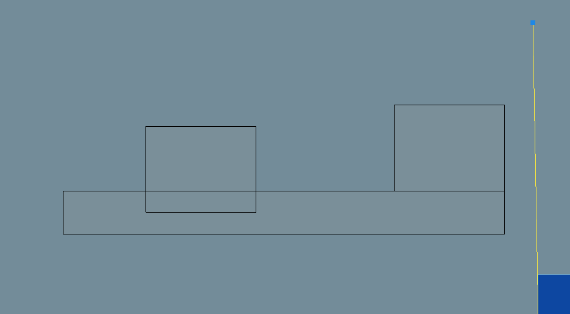
aabb vs multiple aabb
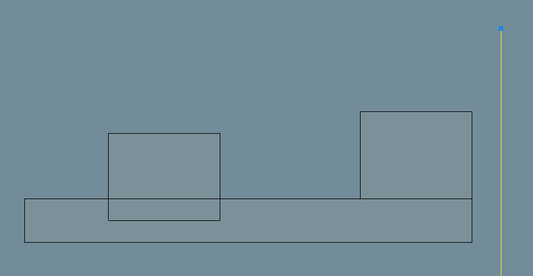
segment vs multiple aabb
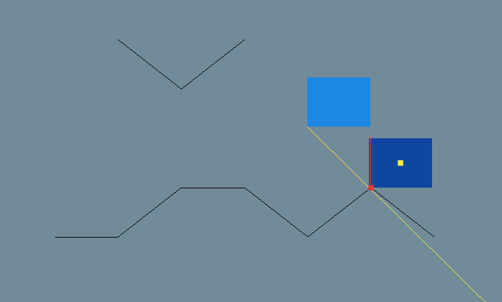
aabb vs multiple segments
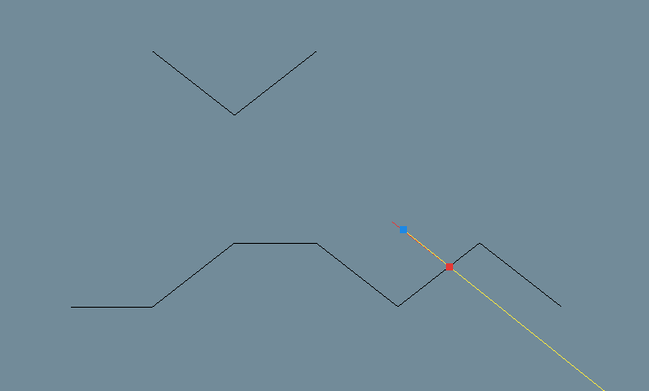
segment vs multiple segment
2) Block - using 3D layer
This example is using the 3D layer.
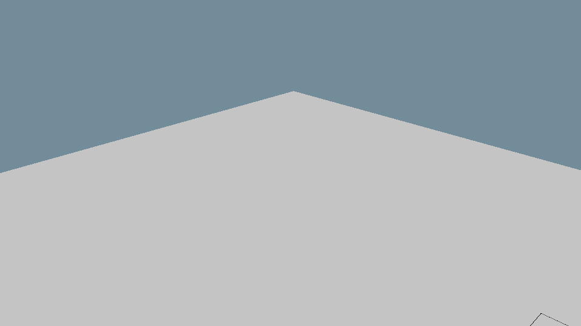
This shows some ray/grid intersection against uniform rectangles (those are not cubes, the eight is smaller than the width).
Joytstick State Viewer
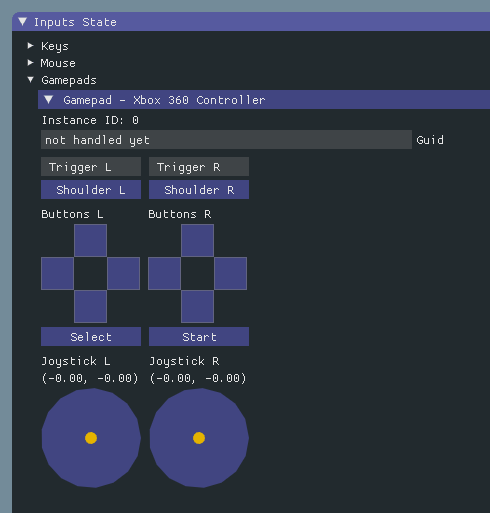
The 'Select' button of my XBox controller was behaving strangely so I tought it would be nice to implement a viewer using Dear ImGui.
2016
Random pattern
I've found this pattern randomly on internet.
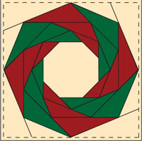
I found it quite cool so I wanted to recreate it procedurally.
Any parameter can be adjusted.
Line Intersection Viewer
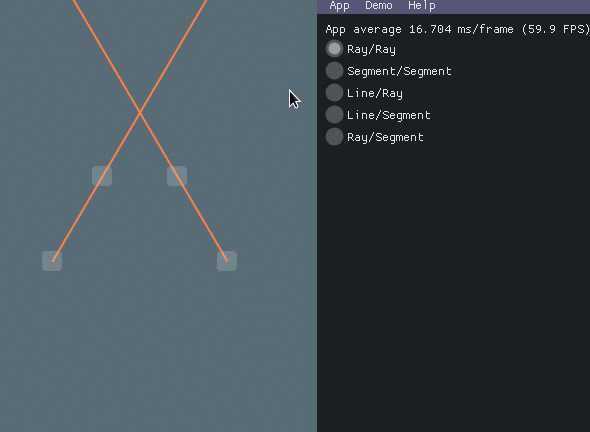
Made this with Dear Imgui to easily check some intersection/collision algorithm.
2013
Bitmap image loader
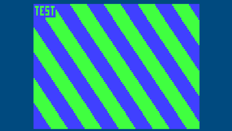
1-bit bitmap 2 colors in the palette
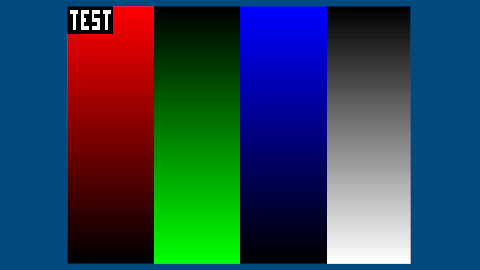
8-bit os2 bitmap
The Bitmap loader was able to load correctly all bitmaps format from the Jason Summer's BMP Suite , and all image from this test suite .
Interestingly, most of the web browsers were struggling with some uncommon format.
I'm not sure why I spent my time dealing with bitmaps while .png had lossless format and had much smaller footprint. It was kind of fun anyway.
Color cycling
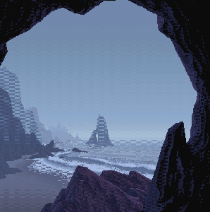
I came across this demo of 90's Color Cycling used in the Amiga era and decided to bring the mechanism to my 3D engine.
This recording does not give it its due, mostely because of the scaling of the viewport and the scaling of the video itself.
2012
Meatspace Invasion
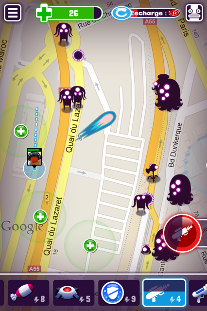
Visit the Meatspace Invasion section to learn more.
Portal and voxels
I finished my studies and needed to practice some C++. This ended up trying to reproduce a Portal-like with cubes/voxels.
Your browser does not support the video tag.
I learned some tricks where you only need to create 6 meshs for each chunk to reduce the number of draw calls.
whereever you look at, you would only see 3 sides of a cube therefore you only need to draw those faces.
If a cube shares the same texture as its neighbor you can merge both meshes together to reduce the number of triangles.
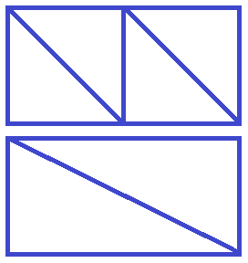
Various Shaders
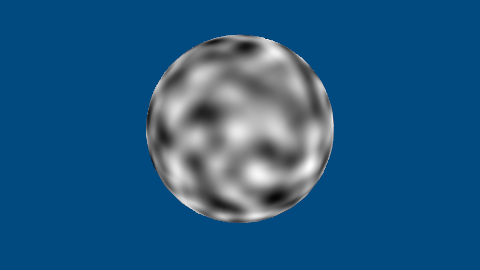
Perlin noise - low resolution
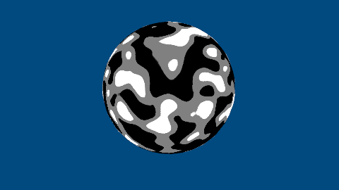
Perlin noise - high resolution
Those Perlin noise textures are actually 3D textures
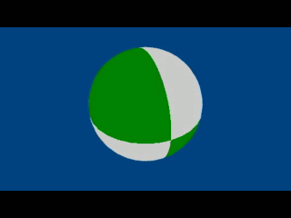
Dissolve effect
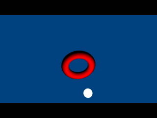
Phong shading
All meshes are procedurally generated.
2011
Kyub - Student project
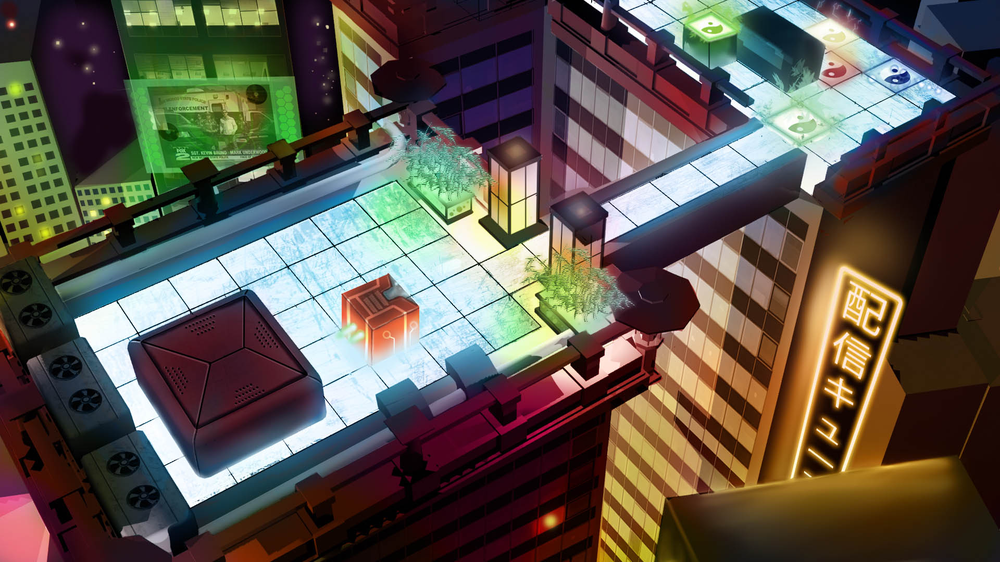
Visit the Kyub section .